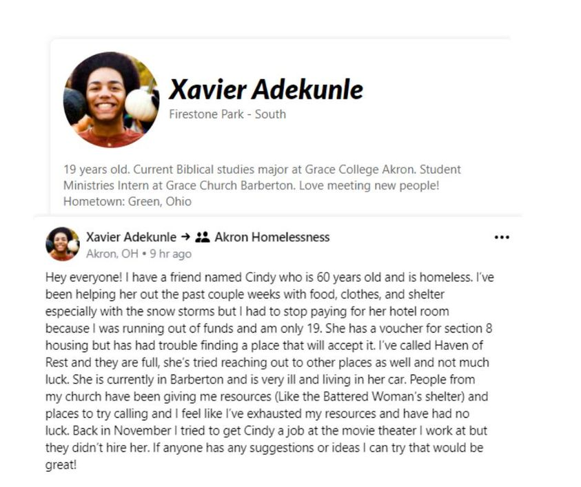

Timeline photos
I NEED YOU TO SEE XAVIER.
Xavier is a friend of mine. Xavier is a 19 year old African American man who is going to change the world.
He is currently helping a 60 year old woman who is very ill living in her car.
There are 2 things I want you to think about here:
1. You need to question your stereotypes of young African American males.
2. How is it that Xavier can make time in his life to do this work and you can't hand a granola bar out your window to a person panhandling on the street?